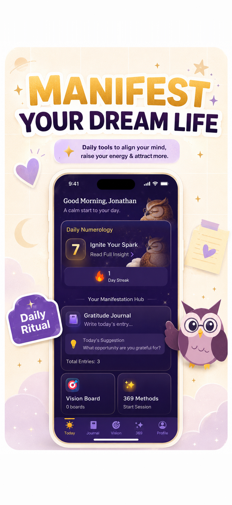

How to Manifest Love: A Grounded 5-Step Method
Manifesting love means using clear intention, written scripts, and daily habits to get yourself ready for, and moving toward, a loving relationship. It works only as far as it changes how you show up: clarity and openness help, but wishing cannot choose or change another person. Here is a five-step method that pairs the writing practice with the actions that actually lead to meeting people.
1) Write how you want to feel in the relationship, not just a checklist. 2) Script it in the present tense. 3) Contrast it with your honest obstacle. 4) Do one real-world action today. 5) Review weekly. Repeat for 33 days.
Want daily prompts and a streak for your love practice? Manifest handles the writing routine for you.
Get Manifest →Does manifesting love actually work?
Partly, and the part that works is not the mystical one. Two bodies of research are worth knowing. First, Joanne Wood and colleagues (Psychological Science, 2009) found that repeating positive self-statements such as “I am a lovable person” made people with low self-esteem feel worse, not better, because the statement clashed with what they believed. Second, Gabriele Oettingen's work on mental contrasting shows that pairing a wish with the obstacle in its way produces more follow-through than fantasy alone.
Neither study measures dating outcomes, so treat them as guides to method, not proof that love can be summoned. The honest verdict: manifestation can sharpen what you want and keep you consistent, and the relationship still depends on real people meeting in real life.
How do you manifest love step by step?
1. Write the feeling, not only the checklist
Most advice says to list your ideal partner's traits. That helps a little, but research by Paul Eastwick and Eli Finkel (Journal of Personality and Social Psychology, 2008) found that in speed-dating events, the ideal-partner preferences people stated beforehand did not predict who they actually felt drawn to once they met. So keep the list short (three to five values such as kindness, humor, honesty) and spend more words on how you want to feel: safe, curious, chosen, free to be yourself.
2. Script it in the present tense
Use the scripting method to write a short scene of the relationship you want, in the present tense, focused on your own behavior. Compare:
| Fixated on a person | Grounded and about you |
|---|---|
| Alex texts me back and falls in love with me. | I am open to new connections and I start conversations easily. |
| My soulmate finds me this year. | I say yes to invitations and meet new people every week. |
| I will never be lonely again. | I am building a life I enjoy, and I share it with a partner who respects me. |
3. Name the obstacle
Add one sentence about what usually gets in the way (“I cancel plans when I feel shy”) and an if-then plan (“If I want to cancel, I go for 30 minutes anyway”). This is mental contrasting applied to love.
4. Take one action today
Message a friend, join a class or club, update a dating profile, go to the event, or repair something you have been avoiding. One action in the world outweighs an hour of imagining.
5. Review weekly
Each week ask: did I do the actions, and how did I feel doing them? Adjust the plan if nothing moved. Add gratitude prompts about the people already in your life so the practice does not become a nightly reminder of what is missing.
Which love affirmations are worth writing?
Pick lines you can say without wincing; our affirmations guide explains why overreaching statements backfire. Believable examples: “I am learning to be at ease with new people,” “I treat myself with the respect I want from a partner,” “I am willing to be known.” Save the bolder relationship scene for your script.
Can you use the 369 method to manifest love?
Yes. The 369 method has you write one sentence three times in the morning, six in the afternoon, and nine at night for 33 days. Choose a sentence about yourself, such as “I am open to a warm, honest relationship,” and keep the daily action alongside it. The step-by-step guide covers the schedule.
Common mistakes when manifesting love
- Fixating on one person. You cannot write someone into feeling something, and waiting on them can cost you months.
- Long wish lists. Twenty required traits screen out people you might actually connect with.
- Hiding at home. Meeting people is the engine; the writing is the focus layer.
- Ignoring red flags. A manifested feeling is not a reason to overlook disrespect. If loneliness or a past relationship is weighing on you heavily, a therapist can help in ways a journal cannot.
Using the Manifest app for a love practice
Manifest: Vision Board & 369 provides the daily writing templates (369, 55×5, scripting), a streak to keep the 33 days going, and a vision board for the life and moments you want to build. It is a habit tool, not a matchmaking service, and it will not find you a partner.

FAQ
Can you really manifest love?
Writing and visualizing cannot make a specific person love you. They can clarify what you want in a relationship, shift your habits toward being open and approachable, and keep you taking real steps like meeting people. Treat manifestation as the focus layer and your actions as the engine.
How long does it take to manifest love?
There is no reliable timeline, and anyone promising one is guessing. A practical frame is a 33-day window (the 369 cycle fits) with a weekly action target, such as one new social plan per week, then a review of what changed.
Can you manifest a specific person?
Manifesting cannot override another person's choices, and focusing on one person can keep you stuck waiting. A healthier use of the practice is to script the kind of relationship and the qualities you want, and to write about how you will show up, then act on real connections as they appear.
Build your love practice daily
Scripts, 369 templates, and a streak that keeps the practice going. 3-day free trial.